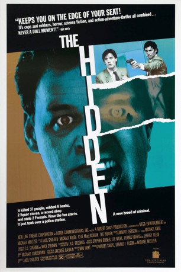

#11382 The Hidden - Das unsagbar Böse
Alternativ: The Hidden (Englischer Titel)
 
 IMDB-Wertung: 7.0 / 10
IMDB-Wertung: 7.0 / 10  Metascore: 0
Metascore: 0 
Ein FBI-Agent ist auf der Jagd nach einer mysteriösen Alien-Kreatur, die sich Körper unschuldiger Bürger zu Eigen macht und durch sie Verbrechen begeht. Doch auch der Jäger ist nicht ganz menschlicher Natur. Regie führte Jack Sholder nach einem Drehbuch von Jim Kouf.
Jahr: 1987
Dauer: 93 Minuten
FSK: 18
Land: USA Studio: New Line CinemaTonspuren: DD5.1 - ,
Untertitel:
Auflösung: 1080p (1920x1080) Größe: 6563 MB
Genre: Action, Thriller, Horror, Sci-Fi, Krimi
Regisseur: Jack Sholder
Drehbuch: Jim Kouf
Soundtrack: Michael Convertino
Darsteller:
 Kyle MacLachlan als Lloyd Gallagher
Kyle MacLachlan als Lloyd Gallagher Michael Nouri als Tom Beck
Michael Nouri als Tom Beck- Claudia Christian als Brenda Lee Van Buren
- Clarence Felder als Lt. John Masterson
 Clu Gulager als Lt. Ed Flynn
Clu Gulager als Lt. Ed Flynn Ed O'Ross als Cliff Willis
Ed O'Ross als Cliff Willis- William Boyett als Jonathan Miller
 Richard Brooks als Sanchez
Richard Brooks als Sanchez Larry Cedar als Brem
Larry Cedar als Brem- Katherine Cannon als Barbara Beck
- John McCann als Senator Holt
 Chris Mulkey als Jack DeVries
Chris Mulkey als Jack DeVries Lin Shaye als Carol Miller
Lin Shaye als Carol Miller- James Luisi als Ferrari Salesman
- Frank Renzulli als Michael Buckley
- Lenna Robinson als Rodeo Drive Girl
 Danny Trejo als Prisoner
Danny Trejo als Prisoner- Duane Davis als
- Kristen Clayton als
- Joey Sagal als
- Joey Aresco als
- Judy Kerr als
 Michael Yama als
Michael Yama als  Jack McGee als
Jack McGee als  Steve Eastin als
Steve Eastin als  Ted White als
Ted White als - Loren Haynes als
- Buckley Norris als
 Deke Anderson als
Deke Anderson als  Wren T. Brown als
Wren T. Brown als  Mark Phelan als
Mark Phelan als  Branscombe Richmond als
Branscombe Richmond als  Lew Hopson als
Lew Hopson als - Jake als
- Michael Joiner als
- Robert Shaye als
- Whitney Reis als
- Jeff Levine als
- Mark Morante als Record Store Clerk
- Jill Friedman als Girl at Record Store
- Rick Lieberman als
- Joseph Whipp als
- Donald Willis als
- Beau Gibson als
- Joe Perce als
- Jason Edwards als
- Joy N. Houck Jr. als DeVries' Neighbor
- Mary Petrie als
- Luce Morgan als
- Richard B. Whitaker als
Datei: X:\FSK18-1900-1999\Hidden - Das unsagbar Böse, The (1987, FSK18, 1920x1080).mkv seit 25.06.2019
Festplatte: FSK18
 Es gibt insgesamt 108 Filme in der Gruppe 'FSK18-1900-1999'
Es gibt insgesamt 108 Filme in der Gruppe 'FSK18-1900-1999'